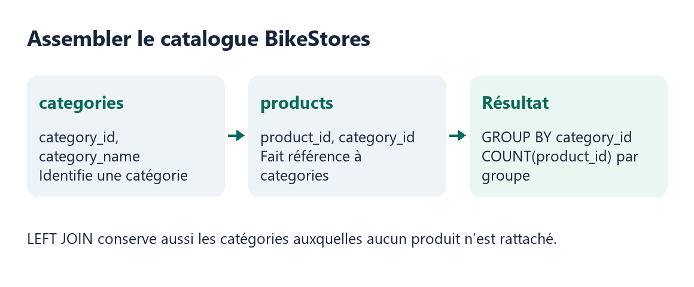

Comprendre le cours
Comprendre ce que garantit un modèle relationnel
Une clé primaire identifie chaque ligne. Une clé étrangère doit correspondre à une valeur autorisée dans la table référencée, sauf absence permise. Indique les cardinalités, c’est-à-dire le nombre de liens autorisés de chaque côté.
En normalisant le modèle, range chaque fait au bon endroit. Sépare par exemple les données qui décrivent la catégorie des données propres au produit. Une transaction regroupe les changements pour les valider ensemble.

Filtrer, joindre et agréger une requête
WHERE s’applique aux lignes avant le regroupement. HAVING COUNT(*) > 1 s’applique aux groupes. DISTINCT élimine les doublons du résultat. IS NULL teste une valeur absente.
Après un LEFT JOIN, compte la clé non nulle du côté droit avec COUNT(p.product_id). COUNT(*) compterait aussi la ligne de catégorie conservée même quand aucun produit ne correspond.
Ajouter des données sans casser les relations
Liste les colonnes de la commande INSERT pour éviter de dépendre de leur ordre dans la table. Vérifie les valeurs requises, les clés étrangères et les types. Pour une date, utilise le format attendu par le moteur.
Pour une suppression ou une mise à jour, teste d’abord la condition avec un SELECT et utilise une transaction si ton environnement le permet.
Comprendre les documents MongoDB
MongoDB organise les documents BSON en collections. Le champ _id identifie le document. Les champs peuvent varier, et une validation de schéma peut imposer des règles. Compare cette approche aux tables et relations séparées.
db.films.find({ duree: { $gte: 90 } }, { titre: 1, _id: 0 }) sélectionne des documents puis limite le résultat. updateOne avec $set modifie des champs. Un pipeline aggregate applique des étapes comme $match puis $group.
Comment garder une catégorie vide quand on compte les produits ?
Imagine les catégories Route et Ville. Route contient deux produits, Ville aucun. Après une jointure externe gauche qui part des catégories, Ville possède encore une ligne, avec un identifiant de produit NULL, la valeur qui signale ici une correspondance absente.
COUNT(*) compte cette ligne et renvoie 1 pour Ville. COUNT(p.product_id) ignore la valeur absente et renvoie 0. Vérifie les deux catégories dans le résultat : le total des comptes doit retrouver les deux produits du jeu d’exemple.
Sigles et acronymes
- ACID · Atomicity, Consistency, Isolation, Durability
- Quatre propriétés courantes d’une transaction de base de données.
Exemple. Un virement est validé avec ses deux écritures ou annulé entièrement. - BSON · Binary JSON
- Format binaire de documents employé par MongoDB.
Exemple. Un document MongoDB peut conserver une date comme un type dédié. - SGBD · Système de gestion de base de données
- Logiciel qui stocke les données et traite les requêtes.
Exemple. MySQL gère les tables et traite les requêtes SQL. - SQL · Structured Query Language
- Langage de requête pour une base relationnelle.
Exemple. SELECT permet de lire les titres des films d’une catégorie.
Du cours aux TD et TP
Les deux parties du cours original sont téléchargeables. Les questions SQL reprennent les travaux BikeStores et Sakila disponibles sous forme de solutions. L’exemple MongoDB est un complément du cours.
Questions TD & TP
TP BikeStores · Compter les produits par catégorie
Énoncé reformulé. Afficher le nombre de produits pour chaque catégorie BikeStores.
- Pars de
categories c. Relieproducts pavecp.category_id = c.category_id. ChoisisLEFT JOINsi les catégories vides doivent apparaître. - Sélectionne
c.category_name, COUNT(p.product_id) AS nb_produits. Termine parGROUP BY c.category_id, c.category_name. - Pour la question du prix moyen par marque, relie
brandsàproductsparbrand_id, puis calculeAVG(list_price)pour chaque marque.
TP Sakila · Calculer la durée moyenne des films par catégorie
Énoncé reformulé. Donner la durée moyenne des films dans chaque catégorie et retrouver les acteurs qui jouent dans le plus de films.
- Relie
film f JOIN film_category fc ON f.film_id = fc.film_idpuisJOIN category c ON c.category_id = fc.category_id. - Calcule
AVG(f.length)et regroupe surc.category_id, c.name. Le résultat est en minutes. - Pour les acteurs, relie
actoràfilm_actorparactor_id, puis compte les films par acteur. Un tri décroissant suivi deLIMIT 1donne un acteur au maximum, et une comparaison au maximum des compteurs conserve tous les ex æquo.
MongoDB · Filtrer des documents et choisir les champs
Exemple d’entraînement. Dans une collection films, retrouver uniquement les titres des films de 90 minutes ou plus.
- Crée trois documents de test avec des durées numériques de 89, 90 et 91. Exécute
db.films.find({ duree: { $gte: 90 } }, { titre: 1, _id: 0 }). - Vérifie que les titres à 90 et 91 apparaissent. Une durée stockée comme texte doit être repérée à l’import.
- Pour compter les films par catégorie, commence par un étage
$groupqui fixe_id: "$categorie"et accumuletotal: { $sum: 1 }.
TP3 · Créer le catalogue de bus et protéger ses références
Énoncé reformulé. Créer les tables MODELE_BUS et BUS, puis vérifier le lien entre un véhicule et son modèle.
- Définis
id_modele INT PRIMARY KEYdans MODELE_BUS etnumero_immatcomme clé primaire dans BUS. - Déclare
FOREIGN KEY (id_modele) REFERENCES MODELE_BUS(id_modele)avec des types compatibles. AjouteNOT NULLsi chaque bus doit avoir un modèle. - Insère un modèle puis deux bus qui y font référence. Fais la jointure sur
id_modeleet vérifie qu’un insert qui pointe vers un modèle absent échoue.
TP4 · Trier et filtrer les données du personnel
Énoncé reformulé. Lister quinze employés, trier par embauche et retrouver les employés dont le prénom commence par A. Compter ensuite les embauches après 2000.
- Sélectionne
emp_no, first_name, last_name, hire_date. Pour les 15 plus récents, termine parORDER BY hire_date DESC, emp_no ASC LIMIT 15. - Utilise
WHERE first_name LIKE 'A%'. La sensibilité à la casse dépend de la collation de la base. - Utilise
SELECT COUNT(*) FROM employees WHERE hire_date > '2000-12-31'pour un champ DATE. Compare avec une sélection sans agrégat pour contrôler l’ensemble compté.